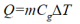
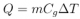
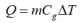
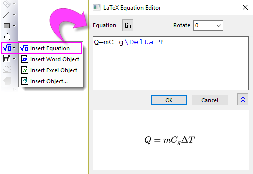
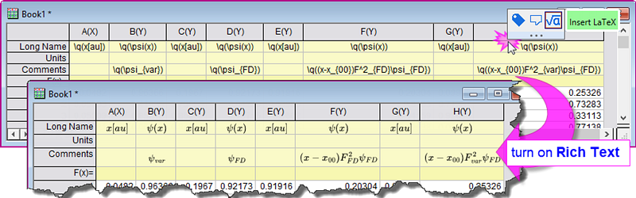
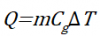
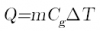
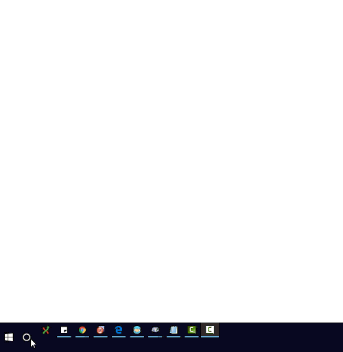

FAQ-991 Wie füge ich Gleichungen und Sonderzeichen in einem Diagramm ein?
Add-Equations-Characters-in-Graph
Letztes Update: 29.03.2023
Origin verfügt über drei Methoden, mit denen Anwender eine Gleichung oder Sonderzeichen in einem Diagramm einfügen können.
|
Texthilfsmittel mit Unicode-Unterstützung |
LaTeX-Gleichung |
Gleichung einfügen |
| Effekt |
 |
 |
 |
| Drehen |
✓ |
✓ |
X |
| Benutzerfreundliche Bedienoberfläche |
Teilweise |
X |
Vollständig |
| Substitution aus Arbeitsmappenkopf |
✓ |
✓ |
X |
| Schwäche |
Unterstützt keine komplexen Zeichen wie Quadratwurzel, Klammern etc. |
Erfordert Grundwissen der LaTeX-Sprache. |
Entsprechende Software/Plug-in muss vorher installiert werden
oder
|
| Wie |
Schaltfläche Text einfügen  |
Schaltfläche Gleichung einfügen  |
- Schaltfläche Objekt einfügen

oder
- Setzen Sie die Systemvariablen @MKX = 1 und @IEE = -1.
Weitere Einzelheiten finden Sie in diesem Abschnitt.
|
LaTeX-Gleichung
Um eine LaTeX-Gleichung im Diagramm einzufügen:
- Wenn ein Diagramm aktiv ist, klicken Sie auf die Schaltfläche Gleichung einfügen auf der Symbolleiste Hilfsmittel.
- Klicken Sie auf die gewünschte Position im Diagramm. Der LaTeX-Gleichungseditor wird geöffnet. Hier können Sie eine Standardfunktion auswählen oder Ihre Gleichung im Bearbeitungsfeld eingeben. Im unteren Bedienfeld wird eine Vorschau der Gleichung gerendert.
- 
Sie können auch LaTeX-Gleichungen auch in Achsentiteln, Legenden oder jedem anderen Textobjekt einfügen:
- Klicken Sie doppelt auf das Textobjekt, um in den direkten Bearbeitungsmodus zu gelangen.
- Klicken Sie mit der rechten Maustaste und wählen Sie Einfügen: LaTeX-Gleichung im Kontextmenü aus oder drücken Sie Strg + L, um den LaTeX-Gleichungseditor zu öffnen.
Um eine LaTeX-Gleichung in eine Arbeitsblattzelle einzufügen:
Sie können LaTeX-Gleichungen in den Arbeitsbereich der Metadaten (z. B. Langname, Einheiten, Kommentare etc.) und Daten einfügen.
- Klicken Sie auf die gewünschte Arbeitsblattzelle und dann auf die Schaltfläche LaTeX einfügen
 auf der aufgerufenen Minisymbolleiste. Dies fügt eine LaTeX-Gleichung, eingeschlossen in die Escape-Sequenz
auf der aufgerufenen Minisymbolleiste. Dies fügt eine LaTeX-Gleichung, eingeschlossen in die Escape-Sequenz \q(), ein.
- Wenn die LaTex-Gleichung auch in der Arbeitsmappe angezeigt werden soll, wählen Sie die Spaltenbeschriftungszeile aus und setzen Sie den Datenstil auf Rich Text.

Hinweis: Die LaTeX-Gleichung, die in eine Spaltenbeschriftungszeile des Arbeitsblatts eingefügt wurde (z. B. Langname, Einheiten und Kommentar) wird in Achsentitel und Legende automatisch gerendert.
Um eine LaTeX-Gleichung in ein Notizfenster einzufügen:
- Klicken Sie doppelt in das Notizfenster, um zur Syntax Origin Rich Text zu wechseln.
- Klicken Sie mit der rechten Maustaste und wählen Sie Einfügen: LaTeX-Gleichung im Kontextmenü.
Hilfsmittel Gleichung einfügen
Verwenden der App Insert Equation
- Klicken Sie auf die Schaltfläche Objekt einfügen auf der Symbolleiste Hilfsmittel.
- Wählen Sie im aufgerufenen Dialog Objekt einfügen die MathType-Gleichung aus der Liste Objekttyp und klicken Sie auf OK.

ODER
- Setzen Sie die Systemvariablen @MKX = 1 und @IEE = -1. Siehe diese FAQ dazu, wie der Wert einer Systemvariable geändert werden kann.
- Klicken Sie bei aktivem Diagramm auf die Schaltfläche Gleichung einfügen auf der Symbolleiste Hilfsmittel.
- Klicken Sie auf Nein, wenn Sie den Dialog gesehen haben.

- Bearbeiten Sie die Gleichungen mit MathType oder dem Dialog Gleichungseditor.

 |
Um das Hilfsmittel zu verwenden muss die entsprechende Software/Plug-in muss vorher installiert werden.
MathType (Nicht kostenfrei)
oder
Microsoft Equation Editor(Nicht verfügbar, wenn das Office-Update vom Januar 2018 (PU) durchgeführt wurde)
|
Texthilfsmittel mit Unicode-Unterstützung
Gleichungen oder Sonderzeichen mit dem Texthilfsmittel hinzufügen
-

Welche Schriftart sollte ich für mathematische Gleichungen verwenden?
Für einfache Gleichungen können Sie das Texthilfsmittel mit dem mathematischen Zeichensatz verwenden. Üblicherweise empfehlen wir die folgenden drei gängigen mathematischen Schriftarten.
-
- Times New Roman (gleiche Schriftart wie MathType und einige TexTools)
- Cambria Math (gleiche Schriftart wie Gleichungen in Microsoft Office)
- Latin Modern Math (gleiche Schriftart wie einige TexTools)
-
| Time New Roman (kursiv) |
Cambria Math (kursiv) |
Latin Modern Math (kursiv) |
 |
 |
 |
Wie finde ich den Unicode des Snderzeichen, das ich brauche?
- Methode 1: Auf eine andere Webseite verweisen
- Browserwebseite für Unicode-Referenz, wie unten zu sehen
- https://unicode-table.com/en
- Suchen Sie nach dem gewünschten Zeichen mit Stichwörtern wie combining dot (verbindende Punkte).
 |
Durch das Kombinieren von Zeichen miteinander können Sonderzeichen erstellt werden.

|
- Methode 2: Windows App verwenden - Character Map
- Suchen und öffnen Sie die Windows App: Character Map.
- Wählen Sie die Schriftart wie Times New Roman und den Zeichensatz wie Unicode.
- Setzen Sie Gruppieren nach = Unicode Subrange
- Wählen Sie den gewünschten Unterbereich und suchen Sie das Sonderzeichen, das Sie verwenden möchten.
- 
Schlüsselwörter:Unicode, ALT+X, Griechisch, ASCII, Erweitertes ASCII, ANSI, Mü, Pi, Delta, Alpha, Beta, Epsilon, Lambda, Grad, hochgestellt, tiefgestellt, erweiterte Zeichen, Escape-Sequenz, Überstrich, Tilde, Punkt, Rich Text, Angström, Mathematik, Umlaut, Arbeitsblattkopf, Spaltenbeschriftung, Legende